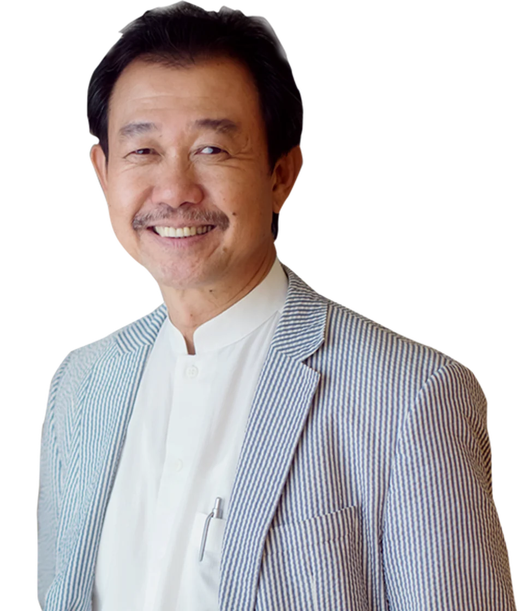
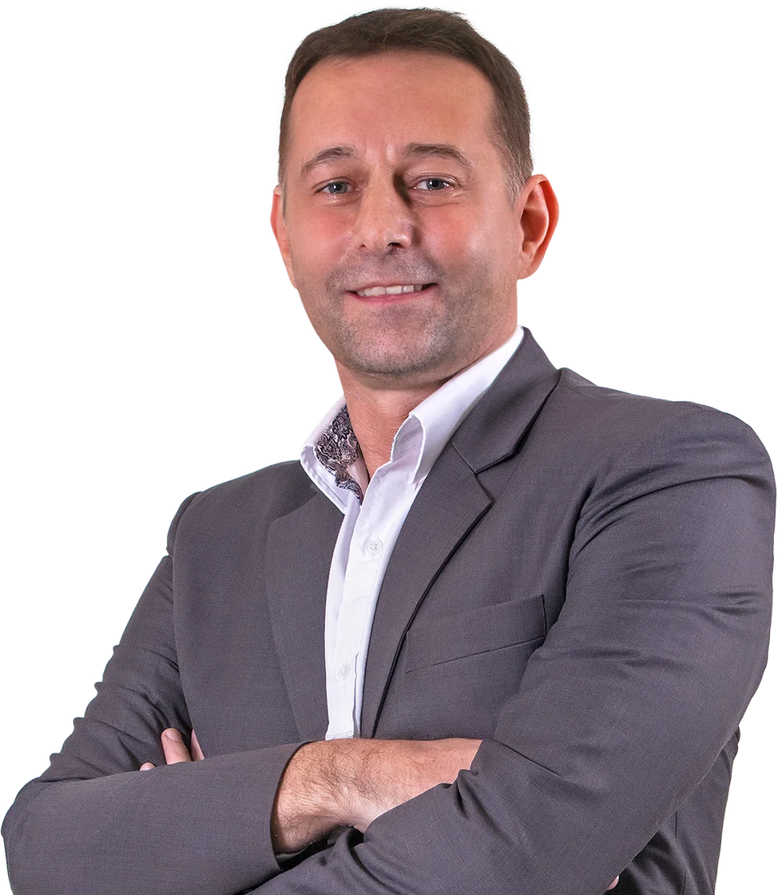
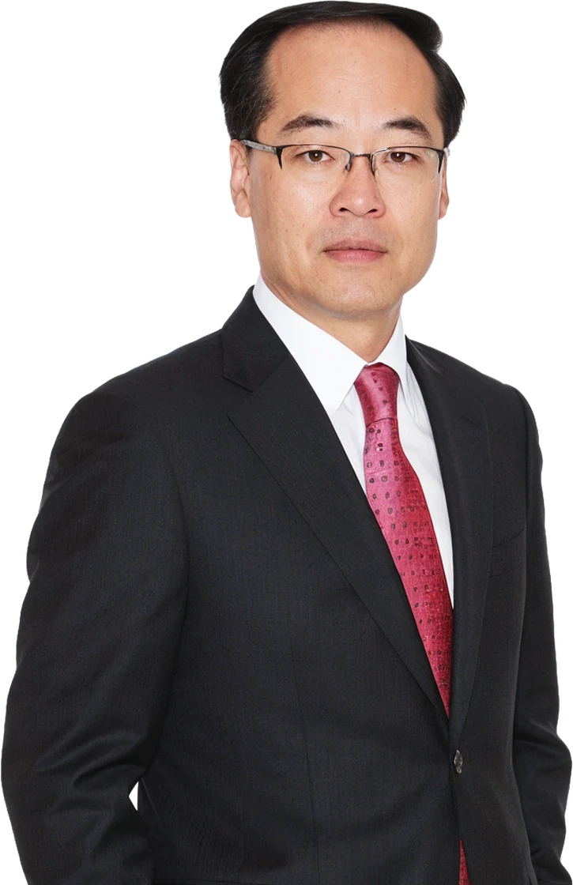
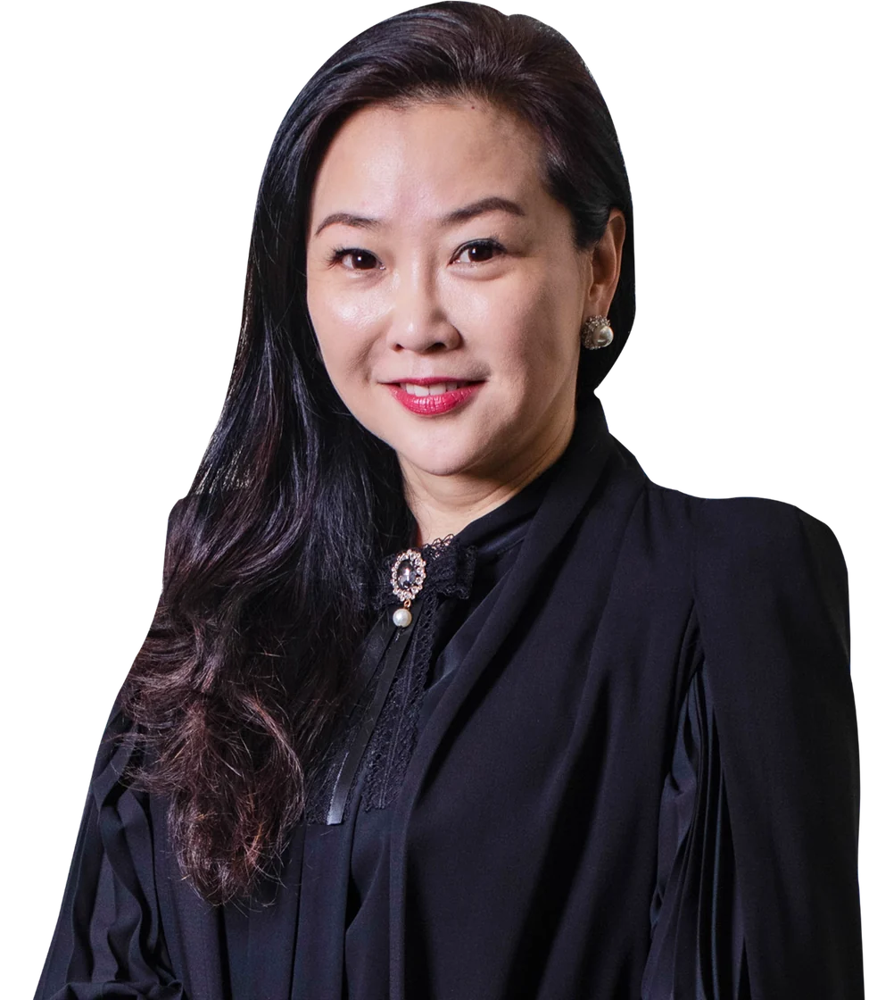

Group Executive Chairman
The founder behind Elken and its group of companies. Over three decades he has built the group’s ventures worldwide, sourcing products, services and partnerships, and continues to drive innovation across the business.
Through the years, many lives have been enriched by Elken through market-leading quality products and services as well as abundant business opportunities. As a people-driven business, our brand promise of “Builds You To Build Others” continues to transform the lives of all those around us.
Chief Executive Officer
Falko Leonhardt leads the Elken Group as Chief Executive Officer, with nearly three decades of leading change and transformation for organisations across multiple regions.
He has advised boards and C-suites on transformative projects, works from grassroots teams upwards to build strategy, and coaches senior leaders on competitiveness, agility and service excellence.


President, Manufacturing Facility
Jang Yong-Chae runs the group’s water purification manufacturing. He was formerly Chief Engineer at the world’s largest water purification equipment company.
He brings over 20 years in water purification equipment design and has created more than 20 water purifier models and 100 types of water-related components. He now brings that expertise to Elken’s own systems.
Vice President
General Manager, Elken Africa
Mr. Bong is an international sales and marketing professional with more than 25 years of experience across the Middle East, Africa and Southeast Asia, covering more than 20 countries. He brings extensive multicultural exposure and proven expertise in business development, market expansion, sales and marketing, with full responsibility for business performance.
With a strong focus on Africa, Mr. Bong has extensive experience across both Anglophone and Francophone markets, with a deep understanding of the continent’s diverse business environments, cultures and market opportunities. He is focused on driving regional growth, building strategic partnerships and expanding the company’s presence across Africa.

Group Legal and Government Affairs
Fiona Khoo leads the group’s legal function, bringing over 20 years as corporate legal counsel. She currently leads the Group Legal and Secretarial Department.
She oversees corporate legal services supporting business growth, provides commercial advisory, and manages the group’s intellectual property portfolio across Asia.
Work with people you can name
Every Elken Stockist is run by a distributor you can call. Come to a free training session and meet them.